1 导数概念
1.1 函数在一点处可导的概念
1.1.1 导数定义
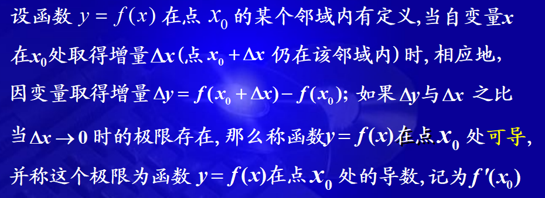
数学定义为：
f′(x0)=Δx→0limΔxΔy=Δx→0limΔxf(x0+Δx)−f(x0)
也可记作：
y′∣x=x0,dxdy∣_x=x0或dxdf(x)∣_x=x0
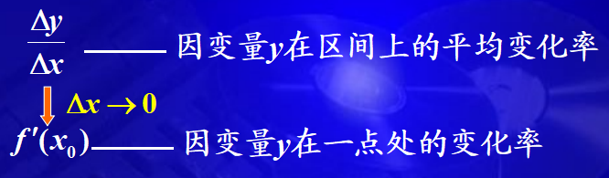
导数的定义式：
f′(x0)=Δx→0limΔxf(x0+Δx)−f(x0)
或
f′(x0)=h→0limhf(x0+h)−f(x0)=x→x0limx−x0f(x)−f(x0)
1.1.2 单侧导数
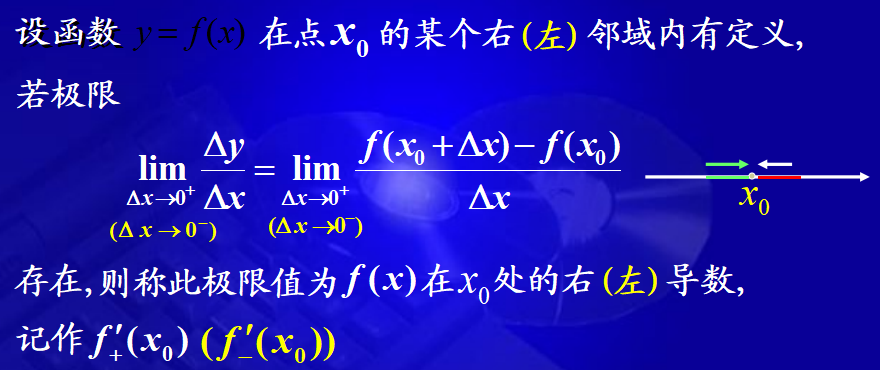
y=f(x)在点x处可导等价于 $ f_{+}^{\prime}\left(x_{0}\right) $ 和 $ f_{-}^{\prime}\left(x_{0}\right) $ 都存在且相等。
1.1.3 几何意义
导数的几何意义是曲线y=f(x)在点(x0,y0)的切线斜率
y−y0=f′(x0)(x−x0)
y−y0=−f′(x0)1(x−x0)(f′(x0)=0)
1.1.4 可导与连续的关系
定理：f(x)在点 x0 处可导 ⟶f(x) 在点 x0 处连续
连续不一定可导，可导一定连续。
f(x)=3x，在 x = 0处连续，但在x = 0 处不可导。

f(x)=∣x∣，在 x = 0 处连续，但在 x = 0 处不可导。
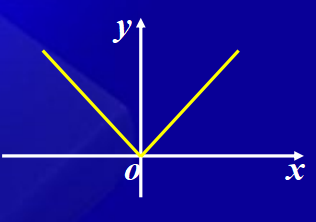
1.2 函数在区间上可导的概念
定义：若函数$ y=f(x) 在 (a, b) 内的每一点处可导，则称函数 y=f(x) 在 (a, b) 内可导.$
定义： 若函数 y=f(x) 在 (a,b) 内的每一点处可导，在x=a处右可导, 在x=b处左可导，则称函数 y=f(x) 在 [a,b] 上可导。
定义：若函数 y=f(x) 在区间 I 上的每一点处可导，这时，对于区间 I 上的任一点 x，都对应着f(x)的一个确定的导数值，这样就构成了一个新的函数，这个函数称为原来函数 f(x) 的导函数.
记作:y′，f′(x)， dxdy或dxdf(x)
1.2.1 导函数的定义
f′(x)=Δx→0limΔxf(x+Δx)−f(x)
1.2.2 导函数与导数的区别与联系
- 区别：f′(x)是一个函数，f′(x0)是一个数
- 联系：f′(x0)=f′(x)∣x=x0
1.3 求导步骤
- 算增量：Δy=f(x+Δx)−f(x)
- 求比值：ΔxΔy=Δxf(x+Δx)−f(x)
- 取极限：f′(x)=limΔx→0ΔxΔy=limΔx→0Δxf(x+Δx)−f(x)
注意：求分段函数在分段点处的导数必须用定义。
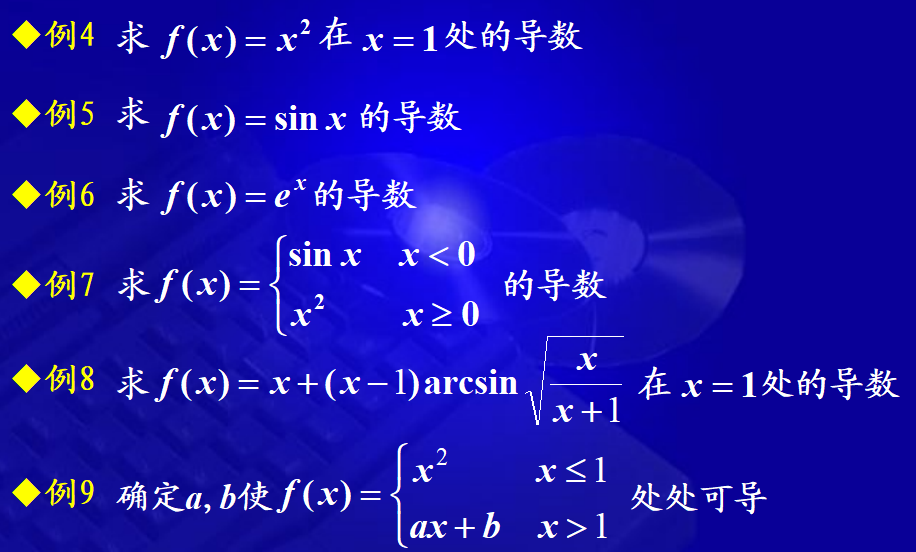
1.4 四则运算求导法则
定理：如果函数u=u(x)及v=v(x)都在点x具有导数，那么它们的和、差、积、商（除分母为0的点外）都在点x具有导数，则：
- (u±v)′=u′±v′
- (uvw)′=u′vw+uv′w+uνw′
- (vu)′=v2u′v−uv′
1.5 反函数的求导法则
定理：$如果函数 x=f(y) 在区间 I_{y} 内单调、可导且 f^{\prime}(y) \neq 0,则它的反函数 $$y=f^{-1}(x) $在区间 $ I_{x}=\left \{x \mid x=f(y), y \in I_{y}\right\} $ 内也可导，且 $ \left(f^{-1}(x)\right)^{\prime}=\frac{1}{f^{\prime}(y)} 或 \frac{\mathrm{d} y}{\mathrm{~d} x}=\frac{1}{\frac{d x}{d y}} $ 。
即反函数的导数等于直接函数导数的倒数。
1.5.1 复合函数求导法则
定理：如果u=g(x)在点x可导，而 y=f(u) 在点$ u = g(x) $可导，则复合函数 y = f\[g(x)] 在点x可导，则
dxdy=f′(u)⋅g′(x)或dxdy=dudydxdu
1.6 常用初等函数的导数公式
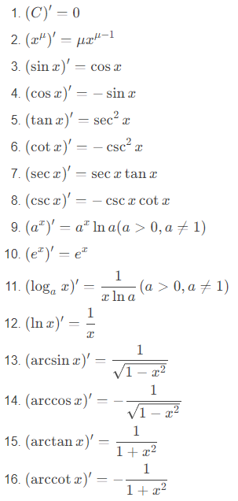
2 隐函数及由参数方程所确定的函数的导数
2.1 隐函数
2.1.1 隐函数的导数
找到一种方法，不管隐函数是否能够显化，都直接由方程算出其确定的隐函数的导数。
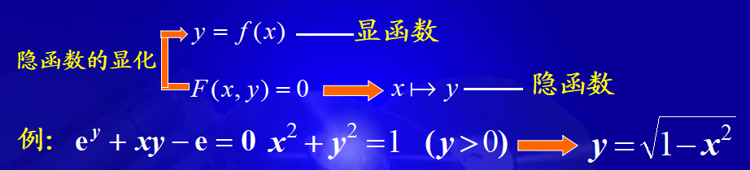
2.1.2 求导步骤
- 方程两边同时对x求导，将y视为x的函数，将含y的项视为x的复合函数
- 解出y’
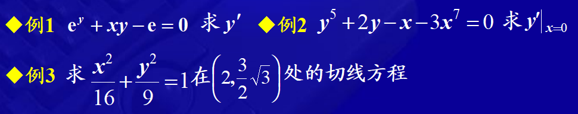
2.1.3 对数求导法
对于幂指函数来说，直接求导可能不太好算，可以先对其求对数，然后进行求导。
2.2 参数方程确定的函数的导数
2.2.1 概念与求导法
一般地，若参数方程：
{x=φ(t)⟺t=φ−1(x)⟺ dxdt=1/ dtdxy=ψ(t)⟺y=ψ(φ−1(x))⟺ dxdy= dtdy dxdt
参数方程确定的函数的导数：
dxdy= dtdy/ dtdx=φ′(t)ψ′(t)
dxdy依然是x的函数,视为中间变量。
2.2.2 相关变化率
x=x(t),y=y(t)为两可导函数，x和y之间有联系，则 dtdx, dtdy之间也有联系，称为相关变化率，有时给你其中一个导数，可以求出另外一个导数。
解题方法：
- 找出相关变量的关系式
- 对上式中t求导，得到相关变化率之间的关系式
- 求出未知的相关变化率
一气球从离开观察员500m处离地面铅直上升，其速率为140 m/min，当气球高度为500m时，观察员视线的仰角增加率是多少?
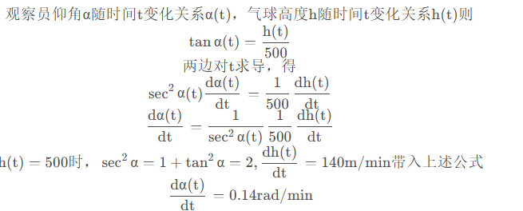
3 高阶导数
n阶导数的定义式
f(n)(x)=h→0limhf(n−1)(x+h)−f(n−1)(x)
3.1 求导方法
3.1.1 简单函数
3.1.2 复杂函数
⎩⎪⎪⎪⎨⎪⎪⎪⎧(u±v)(n)=u(n)±v(n)(uv)(n)=∑k=0nCnku(n−k)v(k)一莱不尼莰公式
4 函数的微分
4.1 微分的概念
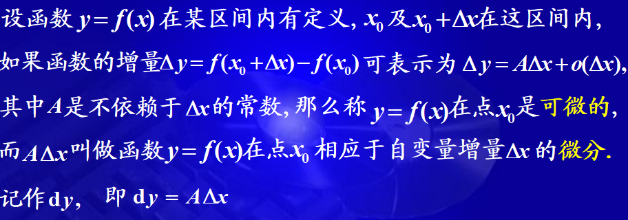
注意：
- 微分的特性：
- A仅与与x0有关，与Δx无关
- dy与A及Δx有关
y=f(x)在x0处可微⟷y=f(x)在x0处可导
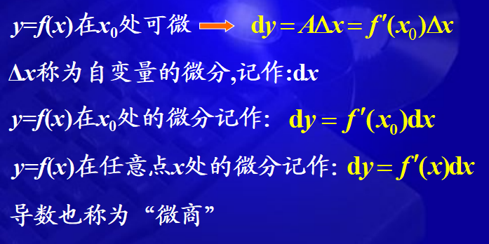
4.2 几何意义
Δy=f(x0+Δx)−f(x0)=f′(x0)Δx+o(Δx)
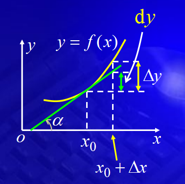
几何意义：切线纵坐标的增量
思想：在一个微小的局部“以直代曲，以不变代变”
4.3 微分运算
4.3.1 基本初等函数的微分公式
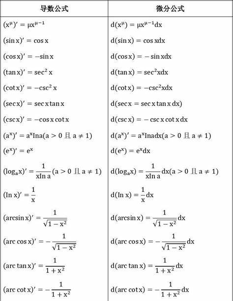
4.3.2 函数和、差、积、商的微分法则
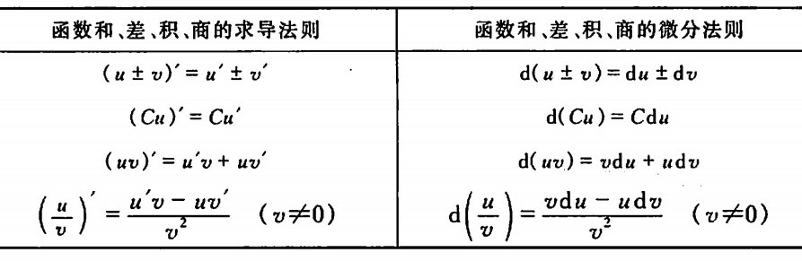
4.3.3 复合函数的微分法则
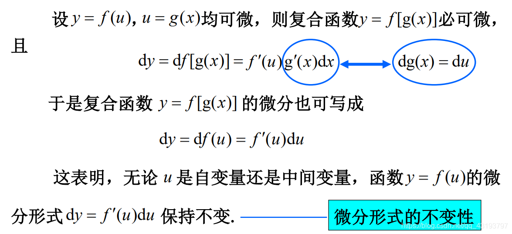

 微信
微信 支付宝
支付宝